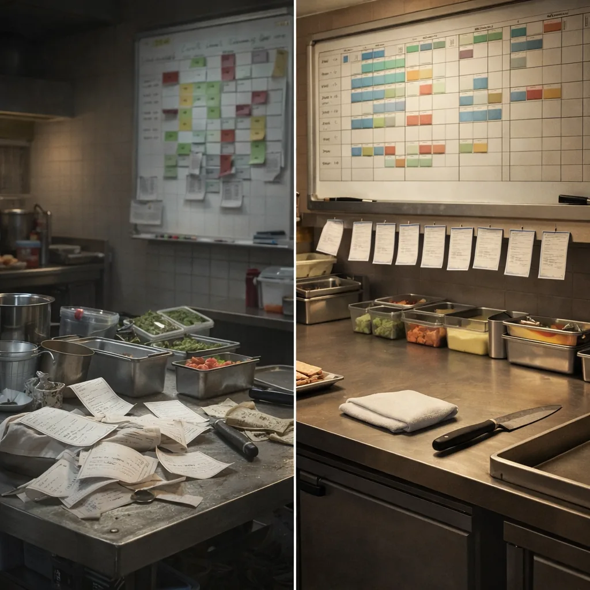
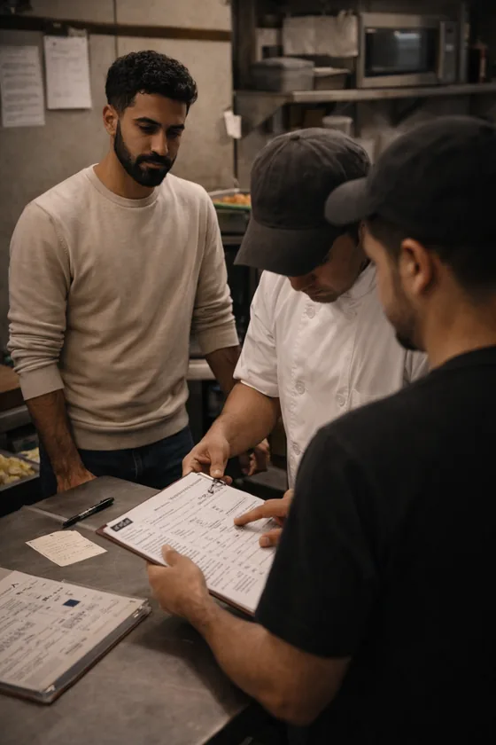

Restaurant Consulting Services for Independent Operators
For restaurants, food trucks, and catering companies across the U.S. Every engagement starts with a clear picture of what's actually hurting your margins.
Profit Leak Snapshot
A 90-minute diagnostic session to identify $10K–$50K in annual profit leaks. The right starting point for most operators.
Learn More →Project Consulting
Focused projects in menu engineering, AI integration, SOPs and training systems, local store marketing, and catering operations. See service areas below.
View Services →Advisory Retainer
Ongoing strategic support for independent operators running $1M+ operations who need a seasoned restaurant operations consultant in their corner every week.
Learn More →Every project starts with a clear audit and a simple plan: fix the bottlenecks, prove the result, then scale. Start with a Profit Leak Snapshot →

From chaos to clarity: the transformation your operations need
AI Integration & Automation for Restaurants
Restaurants, food trucks, and catering operations are drowning in repetitive admin work that AI can handle in minutes. I help operators identify the right tools, build practical workflows, and roll out AI for restaurant operations without disrupting the floor. The result: your managers spend less time in the back office and more time running the operation.
Learn more →Not sure where to start? Book a Profit Leak Snapshot first →
SOPs & Training Systems for Restaurants and Catering Companies
Inconsistency costs you money—in wasted labor, food errors, and constant retraining. I build SOPs and training systems for restaurants and catering companies that are actually used: role scorecards, opening and closing checklists, 30-60-90 onboarding plans, and micro-training for your highest-turnover positions. Your team runs the playbook whether you're there or not.
Learn more →Start with a Profit Leak Snapshot to prioritize what to fix first →
Local Store Marketing for Restaurants and Food Trucks

Most independent operators are leaving money on the table with their immediate community. I build 12-week local store marketing calendars for restaurants, food trucks, and catering companies that drive repeat visits, fill slow shifts, and build neighborhood loyalty—without a big ad budget. Every offer is trackable so you can see what's actually working.
Learn more →Not sure where to start? Book a Profit Leak Snapshot first →
Advisory & Fractional Operations Support
For operators running $1M+ operations who need strategic support without a full-time COO. I work as an embedded partner—weekly calls, KPI reviews, and on-call guidance to help you make better decisions faster. Think of it as having a seasoned restaurant operations consultant in your corner every week, without the overhead of a full hire.
Learn more →Start with a Profit Leak Snapshot before committing to a retainer →
Not Sure Where to Start?
Most operators start with a Profit Leak Snapshot. In 90 minutes we identify your highest-impact leaks and build a prioritized fix list. Available remotely for operators nationwide, and in person across Virginia.
Book Your $350 Profit Leak Snapshot